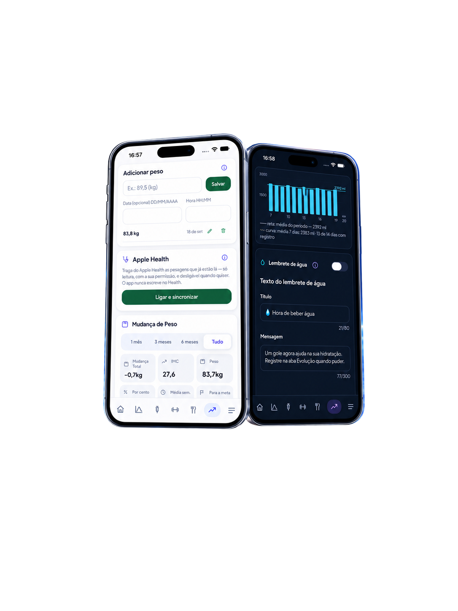
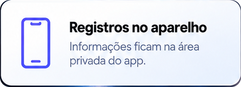

Documento público
Política de Privacidade
Resumo em linguagem simples: o PepDozy™ não possui conta, login, servidor próprio, publicidade, analytics ou telemetria. Os registros de saúde permanecem na área privada do app no iPhone. Eles só saem quando você decide exportar ou compartilhar um arquivo.
1. Finalidade e limites
O PepDozy™ é um aplicativo de registro pessoal para organizar informações que o usuário decide informar sobre aplicações de análogos de GLP-1, peso, água, alimentação, exercícios, sintomas, estoque, preferências e evolução.
O app registra e organiza. Ele não recomenda dose, medicamento, titulação ou mudança de tratamento. Ao registrar uma aplicação, o app pode exibir uma projeção organizacional da próxima data com base no intervalo nominal do produto registrado. Você pode manter ou substituir essa data e o horário; a dose anterior não é transportada como dose futura, e qualquer lembrete exige confirmação separada. As estimativas farmacocinéticas são educativas, derivadas do histórico informado e de parâmetros médios populacionais; não são exame, medição sanguínea, diagnóstico ou prescrição.


2. Dados tratados no aparelho
Conforme as funções que o usuário escolher, o app pode guardar localmente:
- aplicações registradas, molécula, dose, data, horário, local, estoque e observações;
- nome opcional, idade, sexo, altura, peso, meta de peso, nível de atividade e preferências;
- água, exercícios, sintomas, refeições, nutrientes, alimentos próprios e metas nutricionais informadas;
- medições de glicemia informadas manualmente em mg/dL, obtidas em medidor externo, com data, horário e contexto opcional escrito pelo usuário;
- fotos de progresso salvas na pasta privada do app;
- textos, horários e preferências de notificações locais;
- registro local do consentimento e indicadores de backup;
- peso lido do Apple Health, somente se o usuário ativar a integração e autorizar a leitura.
O PepDozy™ não cria perfil publicitário, não vende dados e não disponibiliza esses registros ao desenvolvedor.
O diário de glicemia é opcional e guarda medições informadas manualmente, obtidas em medidor externo, com data, horário e contexto opcional. Não importa glicose do Apple Health nem recebe dados de sensores. Os pontos representam as medições registradas. A linha é apenas uma ligação visual entre registros próximos do mesmo dia: não representa medições entre coletas, não reconstrói a metabolização individual e não prevê valores futuros. Dias diferentes, intervalos acima de 90 minutos e horários conflitantes permanecem sem ligação. O resumo descreve somente as medições consideradas na seleção; a média não representa a glicemia durante o dia inteiro e ausência de registro não é zero. O app não mede glicose, não classifica resultados, não diagnostica e não orienta tratamento.
3. Apple Health e permissões
A integração com o Apple Health vem desligada e, quando ativada, solicita somente leitura de peso. O PepDozy™ não escreve dados no Apple Health. A permissão pode ser retirada nos Ajustes do iOS.
Notificações, câmera e Fotos são solicitadas apenas quando a função correspondente precisa delas. Negar uma permissão não autoriza coleta alternativa e não impede o uso das funções que não dependem dela.
4. Assinaturas e comunicação com a Apple
Para apresentar e administrar assinaturas, o app usa o StoreKit do iOS. O StoreKit se comunica diretamente com a Apple para consultar produtos, preços localizados, ofertas, elegibilidade e transações, além de comprar ou restaurar assinaturas.
Essa comunicação não inclui os registros de saúde guardados pelo PepDozy™. Dados de cartão e outros dados de pagamento não passam pelo app nem ficam disponíveis ao desenvolvedor. O PepDozy™ recebe do StoreKit apenas as informações de produto e transação necessárias para verificar o acesso aos recursos.
O tratamento realizado pela Apple segue as políticas e os termos próprios da Apple.
5. Armazenamento, proteção e retenção
Os registros ficam no contêiner privado do aplicativo. O app utiliza a proteção completa de arquivos do iOS; a eficácia dessa proteção depende de o aparelho possuir código de bloqueio.
Os dados permanecem até que o usuário os exclua no próprio app ou remova o aplicativo. Como não existe conta ou servidor do PepDozy™, não há cópia remota para o suporte consultar, corrigir ou apagar.
6. Backups, relatórios e exportações
O PepDozy™ não envia arquivos automaticamente. Relatórios, planilhas, backups, fotos e diagnósticos só saem do app quando o usuário inicia a exportação e escolhe um destino na folha de compartilhamento do iOS.
- O backup de registros pode ser exportado com ou sem senha. Com senha, é cifrado no aparelho com AES-256-GCM, usando uma chave derivada da senha. A senha não é armazenada e não pode ser recuperada.
- Sem senha, o backup é legível. PDF, CSV e ZIP de fotos não são criptografados pelo PepDozy™. Guarde e compartilhe esses arquivos somente em destinos de sua confiança.
- As medições de glicemia manual, com data, horário e contexto, integram o backup de registros e, quando existirem medições realizadas válidas, a planilha
glicemia.csvna exportação iniciada pelo usuário. A planilha é texto legível e não é criptografada pelo app. - No PDF, a seção Glicemia registrada (mg/dL) vem desligada por padrão e só entra se o usuário a selecionar antes de exportar. Ela inclui as medições realizadas no período escolhido, com data, horário e contexto, e o resumo descritivo desses registros, sem interpretação clínica.
- Os registros locais e a pasta das fotos de progresso são marcados para ficar fora do backup automático do iPhone. Para trocar de aparelho, gere o backup manual do PepDozy™, exporte as fotos separadamente e confira os arquivos salvos. As fotos não integram o backup de registros.
- Pesos importados do Apple Health não entram no backup do PepDozy™. No outro aparelho, podem ser consultados novamente pela integração, se estiverem disponíveis e o usuário conceder a permissão correspondente.
- Depois de exportada, a cópia é controlada pelo destino escolhido; sua exclusão deve ser feita nesse destino.
7. Acesso, correção, exportação e exclusão
O usuário pode consultar e corrigir registros no app, exportar os arquivos oferecidos e apagar os dados em Menu → Gerenciar meus dados. Também pode remover permissões nos Ajustes do iOS e apagar o aplicativo.
No diário de glicemia, o usuário também pode excluir uma medição individual. Datas válidas que se tornem futuras após um ajuste do relógio ou uma restauração continuam preservadas no armazenamento e no backup, mas não aparecem no gráfico, resumo, PDF ou CSV enquanto estiverem no futuro.
Cópias que já tenham sido salvas fora do app devem ser apagadas diretamente no destino em que foram guardadas.
8. Este site
Estas páginas são estáticas. O PepDozy™ não incorpora nelas formulários, login, analytics, pixels, publicidade ou cookies de rastreamento. A hospedagem é fornecida pelo GitHub Pages, que registra e armazena endereços IP de visitantes para fins de segurança, inclusive quando o visitante não está conectado a uma conta GitHub. Esse tratamento técnico segue a documentação e a Política de Privacidade do GitHub. A visita a estas páginas não transmite os registros de saúde armazenados no aplicativo ao desenvolvedor.
9. Alterações desta política
Mudanças materiais sobre coleta, uso, retenção ou compartilhamento serão informadas no aplicativo e poderão exigir novo consentimento antes da continuidade do uso. Ajustes editoriais que não ampliem o tratamento serão registrados sem apagar dados existentes.
A revisão de 17 de setembro de 2026 acrescenta o diário opcional de glicemia manual, sua persistência local e suas exportações. Nas versões do app que incluem esse diário, essa mudança material exige novo aceite, registrado localmente como consentimento versão 6, com a data da confirmação. Um aceite anterior não é promovido automaticamente: os avisos são apresentados novamente. O reaceite preserva os históricos, não repete o cadastro inicial e não cria medições de glicemia.
A revisão editorial de 19 de setembro de 2026 esclarece os campos de perfil já tratados no aparelho, a ligação visual do gráfico, a proteção das exportações e os registros técnicos da hospedagem. Ela não amplia os recursos, as permissões ou o tratamento de registros pelo app; a revisão material associada ao consentimento versão 6 permanece a de 17 de setembro de 2026.
10. Contato
Dúvidas sobre privacidade e suporte do aplicativo podem ser enviadas para cabralmoreirao23@icloud.com.
Não envie por e-mail doses, exames, fotografias clínicas, documentos, senhas, dados bancários ou qualquer informação de saúde que não seja indispensável para descrever uma falha.